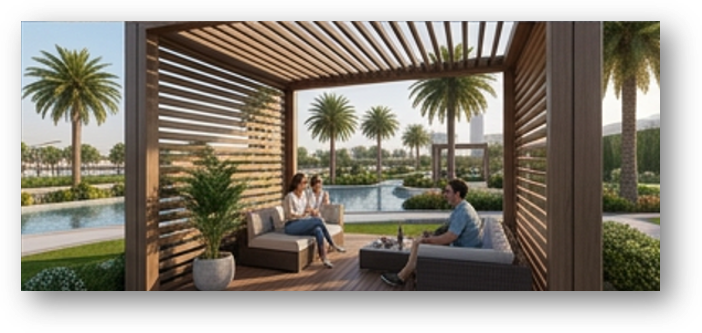
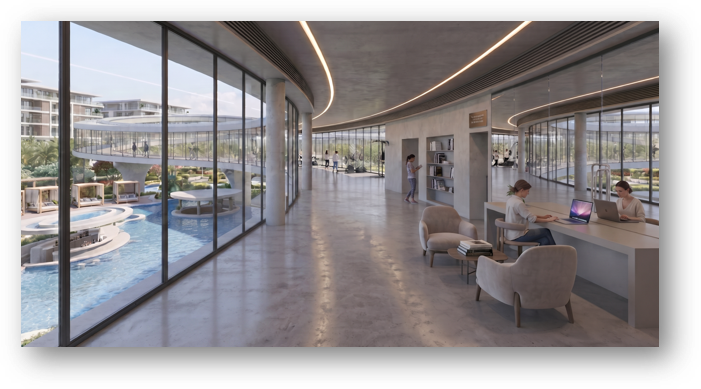
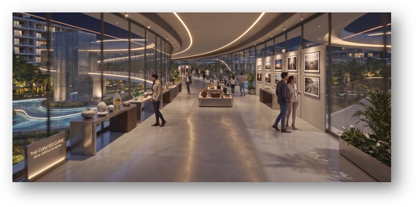
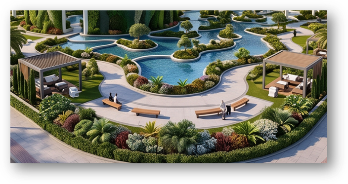
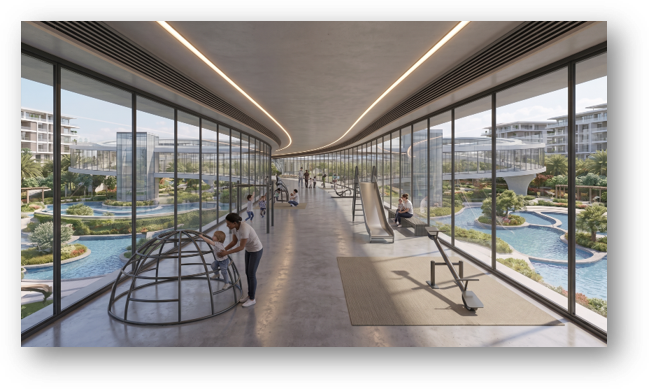
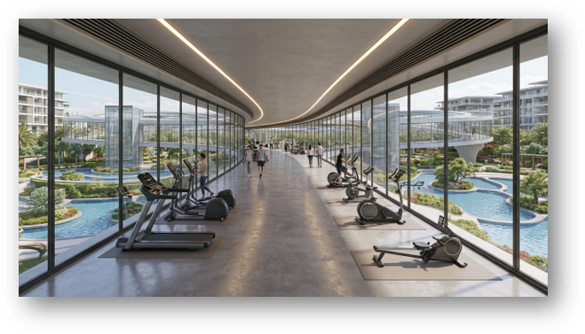
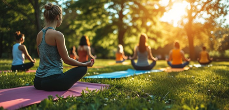
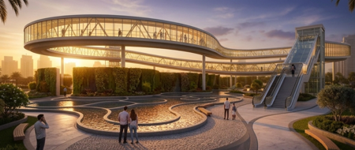
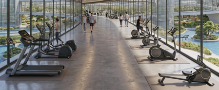
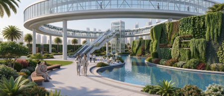

Serving as an inviting communal enclave, the louvered timber pavilion offers families and groups a tranquil setting to gather, relax, and immerse themselves in the surrounding natural beauty of the park's water bodies and landscaped grounds.
Strategically positioned to maintain visual connectivity with adjacent children's play areas and outdoor fitness zones, it provides a comfortable vantage point where companions can unwind or socialize while keeping watch over children at play or family members engaged in active workouts.

Designed for the modern urban lifestyle, the climate-controlled indoor smart loop provides a sophisticated sanctuary where parents or companions can work or read without interruption.
Manage professional tasks or personal reading within the high-performance Low-E glass enclosure, maintaining full visibility of the outdoor park, water features, and active zones.
This layout empowers families to bring children or partners out for physical activities and athletic training, ensuring that adults can utilize their time effectively while maintaining a supportive presence.

Tailored for visitors, picnickers, and international tourists, the climate-controlled exhibition corridor transforms the interior smart loop into an immersive cultural journey.
Featuring curated wall-hanging galleries, interpretive artifacts, and artistic displays, the space articulates Dubai’s rich heritage alongside its futuristic urban vision.
Visitors can explore local history, design innovation, and municipal milestones within a comfortable environment, blending leisure and cultural education seamlessly into the park experience.

Tailored specifically for senior citizens and people of determination, the design ensures effortless universal accessibility across all park features.
Step-free pathways with gentle gradients and tactile paving allow visitors to enjoy peaceful strolls, take in the scenic views of meandering water bodies, and relax on shaded garden benches positioned strategically along the route.
This environment combines gentle physical mobility with tranquil waterfront relaxation, ensuring complete comfort for all age groups and abilities.

Integrated directly into the continuous indoor smart loop, this climate-protected children's play area features a comprehensive assortment of age-appropriate play equipment—including climbing domes, slides, and interactive play structures—distributed along the path.
Operating within a comfortable, air-conditioned environment shielded by high-performance glazing, children can engage in active physical play 365 days a year without exposure to extreme outdoor heat, while parents enjoy clear sightlines and seamless supervision.

Engineered for continuous year-round health and athletic performance, the climate-controlled indoor fitness hub houses professional-grade training equipment—including treadmills, stationary bikes, and rowers—distributed seamlessly along the panoramic smart loop.
Protected from extreme climate days by high-performance Low-E glazing, fitness enthusiasts can engage in uninterrupted cardiovascular workouts and daily training regimens while enjoying immersive, inspiring views of the lush parkland and water features outside.

The park awakens with vitality as early risers embrace brisk jogs, outdoor wellness loops, and open-air yoga sessions across the lush ground-level landscape.
Energized by a strategic water body allocation that cools the morning atmosphere, this sunrise window establishes a vibrant community rhythm.
It draws fitness enthusiasts, local residents, and seniors alike to the shaded pathways, tactile walking trails, and accessible rest plazas.

As the sun dips below the skyline, the expansive facility transforms into a sophisticated social and cultural hub.
Families gather around illuminated water features, dynamic splash zones, and modern outdoor seating nodes, while evening joggers, food pop-ups, and interactive fitness games animate the grounds.
Supported by low-glare smart illumination and comfortable ambient evening temperatures, the space nurtures deep community engagement.

Extreme ambient heat is completely neutralized through high-performance architectural engineering, seamlessly shifting public life into the climate-controlled sanctuary of the massive solid-floor indoor pavilion.
Powered entirely by the rooftop BIPV solar grid, uninterrupted community wellness, remote work breakout lounges, and interactive children's edutainment thrive within the triple-silver Low-E glass envelope, entirely insulated from seasonal thermal extremes.

Capitalizing on Dubai’s ideal seasonal climate, the design dissolves the rigid boundaries between interior architecture and the thriving exterior park ecosystem.
Expansive open-air lawns, shaded family picnic spaces, and vibrant community festivals come to life under mild skies, celebrating the civic sanctuary in its fully unlocked, multi-generational open-air state.
